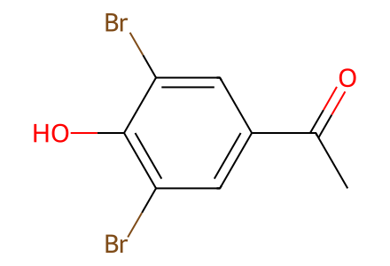
CC(=O)c1cc(Br)c(O)c(Br)c117 molecular records; 10 preparation events; 4 selected paths. Complete source preparative network for procerones A/B, including epoxide and over-reduced branches and physical HPLC separation. Starts 10 and 11a/b are explicitly purchased. Source natural-product configuration labels are retained; chromatographic resolution is not counted as chemical bond formation.
完整 JSON · 逐步 CSV · 路线序列 · SDF · HRMS 核对
| 事件 | 分子连接 | 报告产率 | Canonical reaction SMILES |
|---|---|---|---|
| E01 | 10 + 11a → 12a | 12a: 83% | CC(=O)c1cc(Br)c(O)c(Br)c1.COc1ccc(C=O)cc1Br>>COc1ccc(/C=C/C(=O)c2cc(Br)c(O)c(Br)c2)cc1Br |
| E02 | 12a → 13a | 13a: 81% | COc1ccc(/C=C/C(=O)c2cc(Br)c(O)c(Br)c2)cc1Br>>COc1ccc(C2OC2C(=O)c2cc(Br)c(O)c(Br)c2)cc1Br |
| E03 | 12a → 14a + 15a | 14a: 81%; 15a: 18% | COc1ccc(/C=C/C(=O)c2cc(Br)c(O)c(Br)c2)cc1Br>>COc1ccc(CCC(=O)c2cc(Br)c(O)c(Br)c2)cc1Br.COc1ccc(CCCc2ccc(Br)c(O)c2Br)cc1Br |
| E04 | 14a → 1a-mixture | 1a-mixture: 33% | COc1ccc(CCC(=O)c2cc(Br)c(O)c(Br)c2)cc1Br>>COc1ccc(CC(O)C(=O)c2cc(Br)c(O)c(Br)c2)cc1Br |
| E05 | 1a-mixture → 1a + ent-1a | not reported | COc1ccc(CC(O)C(=O)c2cc(Br)c(O)c(Br)c2)cc1Br>>COc1ccc(C[C@@H](O)C(=O)c2cc(Br)c(O)c(Br)c2)cc1Br.COc1ccc(C[C@H](O)C(=O)c2cc(Br)c(O)c(Br)c2)cc1Br |
| E06 | 10 + 11b → 12b | 12b: 57% | CC(=O)c1cc(Br)c(O)c(Br)c1.COc1c(Br)cc(C=O)cc1Br>>COc1c(Br)cc(/C=C/C(=O)c2cc(Br)c(O)c(Br)c2)cc1Br |
| E07 | 12b → 13b | 13b: 51% | COc1c(Br)cc(/C=C/C(=O)c2cc(Br)c(O)c(Br)c2)cc1Br>>COc1c(Br)cc(C2OC2C(=O)c2cc(Br)c(O)c(Br)c2)cc1Br |
| E08 | 12b → 14b + 15b | 14b: 60%; 15b: 29% | COc1c(Br)cc(/C=C/C(=O)c2cc(Br)c(O)c(Br)c2)cc1Br>>COc1c(Br)cc(CCC(=O)c2cc(Br)c(O)c(Br)c2)cc1Br.COc1c(Br)cc(CCCc2ccc(Br)c(O)c2Br)cc1Br |
| E09 | 14b → 1b-mixture | 1b-mixture: 30% | COc1c(Br)cc(CCC(=O)c2cc(Br)c(O)c(Br)c2)cc1Br>>COc1c(Br)cc(CC(O)C(=O)c2cc(Br)c(O)c(Br)c2)cc1Br |
| E10 | 1b-mixture → 1b + ent-1b | not reported | COc1c(Br)cc(CC(O)C(=O)c2cc(Br)c(O)c(Br)c2)cc1Br>>COc1c(Br)cc(C[C@@H](O)C(=O)c2cc(Br)c(O)c(Br)c2)cc1Br.COc1c(Br)cc(C[C@H](O)C(=O)c2cc(Br)c(O)c(Br)c2)cc1Br |

CC(=O)c1cc(Br)c(O)c(Br)c1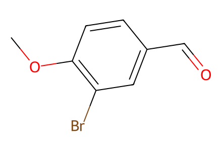
COc1ccc(C=O)cc1Br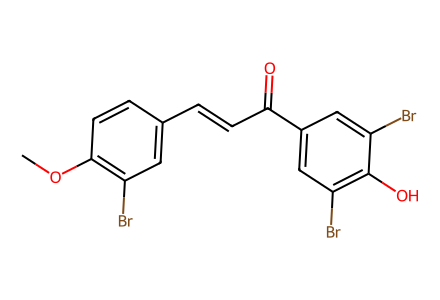
COc1ccc(/C=C/C(=O)c2cc(Br)c(O)c(Br)c2)cc1Br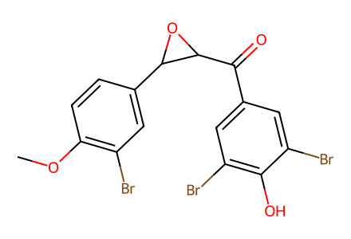
COc1ccc(C2OC2C(=O)c2cc(Br)c(O)c(Br)c2)cc1Br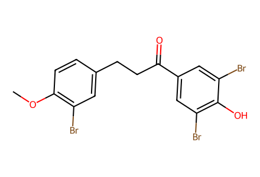
COc1ccc(CCC(=O)c2cc(Br)c(O)c(Br)c2)cc1Br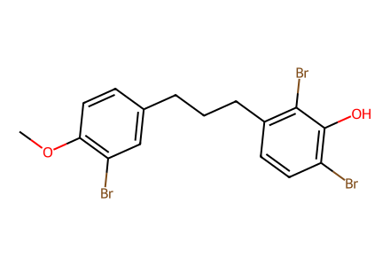
COc1ccc(CCCc2ccc(Br)c(O)c2Br)cc1Br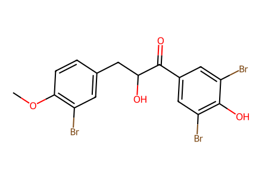
COc1ccc(CC(O)C(=O)c2cc(Br)c(O)c(Br)c2)cc1Br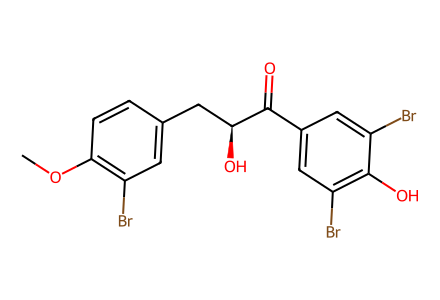
COc1ccc(C[C@H](O)C(=O)c2cc(Br)c(O)c(Br)c2)cc1Br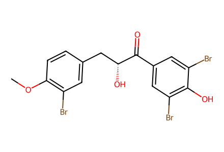
COc1ccc(C[C@@H](O)C(=O)c2cc(Br)c(O)c(Br)c2)cc1Br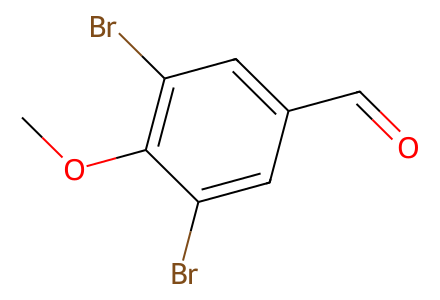
COc1c(Br)cc(C=O)cc1Br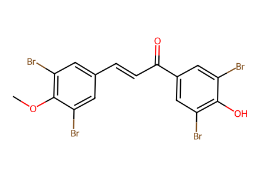
COc1c(Br)cc(/C=C/C(=O)c2cc(Br)c(O)c(Br)c2)cc1Br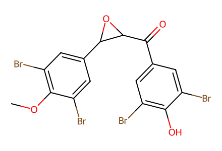
COc1c(Br)cc(C2OC2C(=O)c2cc(Br)c(O)c(Br)c2)cc1Br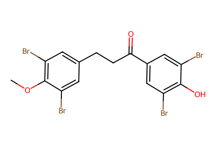
COc1c(Br)cc(CCC(=O)c2cc(Br)c(O)c(Br)c2)cc1Br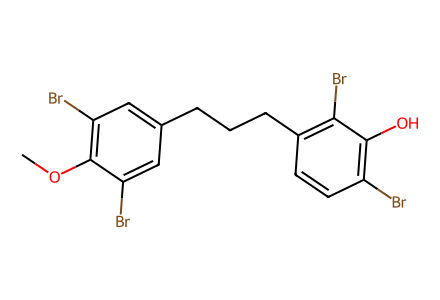
COc1c(Br)cc(CCCc2ccc(Br)c(O)c2Br)cc1Br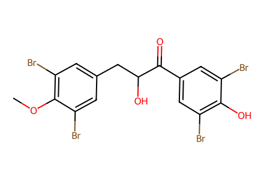
COc1c(Br)cc(CC(O)C(=O)c2cc(Br)c(O)c(Br)c2)cc1Br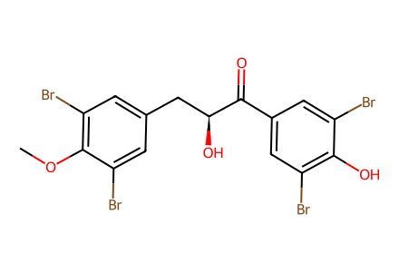
COc1c(Br)cc(C[C@H](O)C(=O)c2cc(Br)c(O)c(Br)c2)cc1Br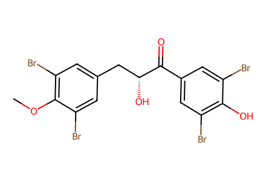
COc1c(Br)cc(C[C@@H](O)C(=O)c2cc(Br)c(O)c(Br)c2)cc1Br